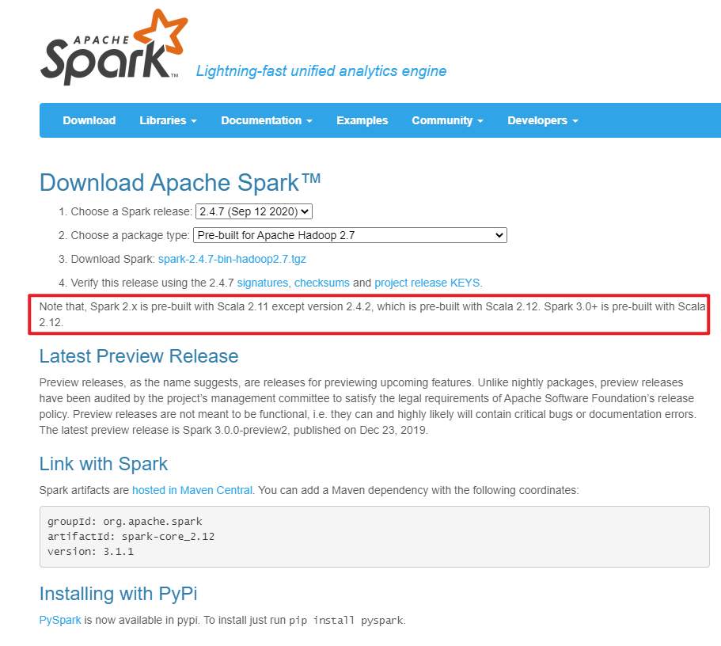
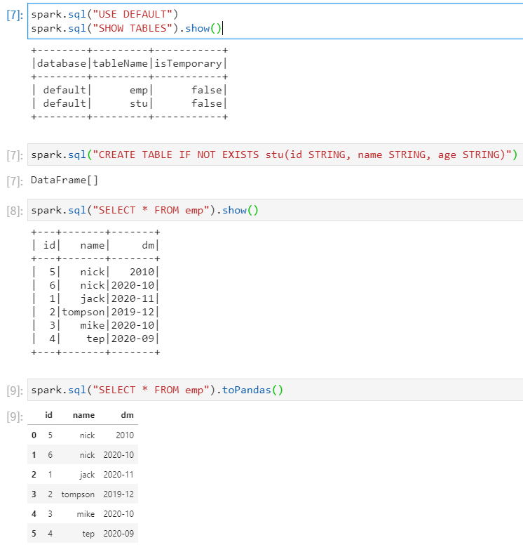

42. [Pyspark]PySpark
REFERENCE: 官方文档
42.1. 先决条件
以下所说的都为在Windows环境测试
环境为Anaconda、Spark2.4.7、JDK1.8、Python3.7、PySpark2.4.7
Anaconda是一个杰出的数据分析工具，内部集成了大量的有关数据分析的Python包，方便使用，我们使用Anaconda来安装PySpark，Anaconda默认自带Python环境，此处默认已经配置好了Python环境
42.1.1. Step1
在本地安装JDK并配置环境变量
42.1.2. Step2
下载合适版本的Spark，并将Spark放置在合适目录，并配置环境变量

NOTE：Spark2除了Spark2.4.2是用Scala2.12预编译的之外其他都是用Scala2.11，Spark3.0+都是用Scala2.12预编译的
42.1.3. Step3
在本地安装PySpark，注意PySpark版本需要与Spark版本保持一致，如果不一致可能会带来意想不到的错误
pip uninstall pyspark
pip install pyspark==2.4.7
安装与Spark版本一致的PySpark，否则运行时会报错，可能会报Scala版本不一致的错误
42.2. 即刻开始
42.2.1. 运气好
如果运气好的话，打开Anaconda，从中打开Jupyter Lab或者Jupyter Notebook，使用以下代码即刻快速开始使用PySpark进行数据分析
from pyspark.sql import SparkSession
spark = SparkSession.builder.getOrCreate()
from datetime import datetime, date
import pandas as pd
from pyspark.sql import Row
df = spark.createDataFrame([
Row(a=1, b=2., c='string1', d=date(2000, 1, 1), e=datetime(2000, 1, 1, 12, 0)),
Row(a=2, b=3., c='string2', d=date(2000, 2, 1), e=datetime(2000, 1, 2, 12, 0)),
Row(a=4, b=5., c='string3', d=date(2000, 3, 1), e=datetime(2000, 1, 3, 12, 0))
])
df
DataFrame[a: bigint, b: double, c: string, d: date, e: timestamp]
42.2.2. 运气不好
当然也有可能，由于安装存在种种问题，在使用上述代码进行开发的时候，总是报种种错误，下面这些代码是经过总结得到的，一般绝不会出错
import pyspark
import os
import findspark
# 路径需要改为自己的
findspark.init("E:\spark-2.4.7-bin-hadoop2.7")
# 路径改为自己本地的SPARK_HOME路径
os.environ ['SPARK_HOME'] = 'E:\spark-2.4.7-bin-hadoop2.7'
spark = SparkSession.builder.master("local[1]").getOrCreate()
df = spark.sql("SELECT 1 AS test")
df.show()
spark.stop()
42.3. 正式使用
上述代码不适合复用，我们将其封装成为函数
def initSparkSession():
"""
实例化一个SparkSession对象
"""
import os
from pyspark.sql import SparkSession
os.environ["PYSPARK_SUBMIT_ARGS"] = '--jars kudu-spark2_2.11-1.13.0.jar pyspark-shell'
os.environ ['JAVA_HOME'] = 'C:\Program Files\Java\jdk1.8.0_201'
os.environ ['SPARK_HOME'] = 'E:\spark-2.4.7-bin-hadoop2.7'
import findspark
findspark.init("E:\spark-2.4.7-bin-hadoop2.7")
spark = SparkSession.builder.master("local[2]").appName("PySparkLocal").getOrCreate()
return spark
42.4. PySpark读取Kudu
如果想要成功读取Kudu，还需要Kudu-Spark的Jar包，放在合适的位置，在代码中由
os.environ["PYSPARK_SUBMIT_ARGS"] = '--jars kudu-spark2_2.11-1.13.0.jar pyspark-shell'指定，示例中使用的是kudu-spark2_2.11-1.13.0.jar,位置为代码所在的目录，当然也可以使用绝对路径
def initSparkSession():
"""
实例化一个SparkSession对象
"""
import os
from pyspark.sql import SparkSession
os.environ["PYSPARK_SUBMIT_ARGS"] = '--jars kudu-spark2_2.11-1.13.0.jar pyspark-shell'
os.environ ['JAVA_HOME'] = 'C:\Program Files\Java\jdk1.8.0_201'
os.environ ['SPARK_HOME'] = 'E:\spark-2.4.7-bin-hadoop2.7'
import findspark
findspark.init("E:\spark-2.4.7-bin-hadoop2.7")
spark = SparkSession.builder.master("local[2]").appName("PySparkLocal").getOrCreate()
return spark
def readKuduTable(spark, kuduMaster, kuduTable):
df = spark.read.format("org.apache.kudu.spark.kudu") \
.option("kudu.table","{}".format(kuduTable)) \
.option("kudu.master", "{}".format(kuduMaster)) \
.load()
return df
if __name__ == '__main__':
# 实例化一个SparkSession对象
spark = initSparkSession()
# 将对象作为参数传入函数
df = readKuduTable(spark, "node1:7051", "fox_tm_vehicle_series")
df.show() # 将DF的内容打印
df.createOrReplaceTempView("tab") # 创建临时表，方便后面使用sql
spark.sql("SELECT id, name, name_alias FROM tab").show() # 选取几个字段进行展示打印
spark.sql("SELECT COUNT(*) FROM tab").show()
df.toPandas() # 以pandas的表格形式展示
spark.sql("SELECT * FROM tab LIMIT 20").toPandas() # 如果原表数据量太大，直接调用toPandas()的话，可能会导致Driver内存溢出，这里使用sql选取20行再以pandas的表格形式展示
spark.stop()
42.5. PySpark读取Hive
为了成功支持读取Hive，在Windows环境下，需要本地安装spark环境，并且在spark的conf目录下放入Hive配置中的hive-site.xml和hadoop集群的core-site.xml、core-site.xml配置文件
Configuration of Hive is done by placing your hive-site.xml, core-site.xml (for security configuration), and core-site.xml (for HDFS configuration) file in conf/.
代码示例：
def initSparkHiveSession():
"""
实例化一个SparkSession对象
为了成功支持读取Hive，在Windows环境下，需要本地安装spark环境，
并且在spark的conf目录下放入Hive配置中的hive-site.xml和hadoop集群的core-site.xml、core-site.xml配置文件
"""
import os
from pyspark.sql import SparkSession
# 用来支持读Kudu的，在本程序所在同级目录下必须有kudu-spark2_2.11-1.13.0.jar这个jar包
os.environ["PYSPARK_SUBMIT_ARGS"] = '--jars kudu-spark2_2.11-1.13.0.jar pyspark-shell'
# 本地环境的JDK
os.environ ['JAVA_HOME'] = 'C:\Program Files\Java\jdk1.8.0_201'
# 本地环境的spark-hadoop集成包
os.environ ['SPARK_HOME'] = 'E:\spark-2.4.7-bin-hadoop2.7'
import findspark
findspark.init("E:\spark-2.4.7-bin-hadoop2.7")
# config中配置Hive在HDFS上的目录地址，当创建数据库或者向表中写入文件时会在此目录下进行操作
spark = SparkSession.builder \
.appName("SparkSQLHive") \
.config("spark.sql.warehouse.dir", "/user/hive/warehouse") \
.enableHiveSupport() \
.getOrCreate()
return spark
if __name__ == '__main__':
# 实例化一个SparkSession对象
# spark = initSparkSession()
# 将对象作为参数传入函数
# df = readKuduTable(spark, "node1:7051,node2:7051,node3:7051", "fox_tc_error_code_mapping")
spark = initSparkHiveSession()
spark.sql("USE DEFAULT")
spark.sql("SHOW TABLES").show()
spark.stop()
